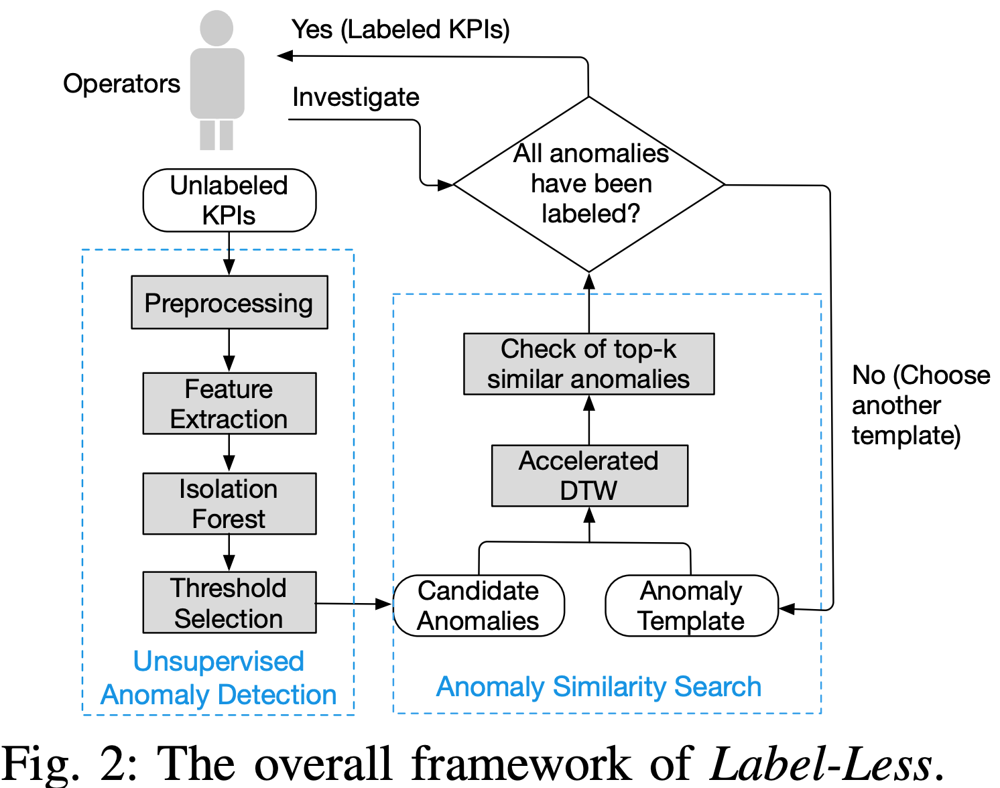
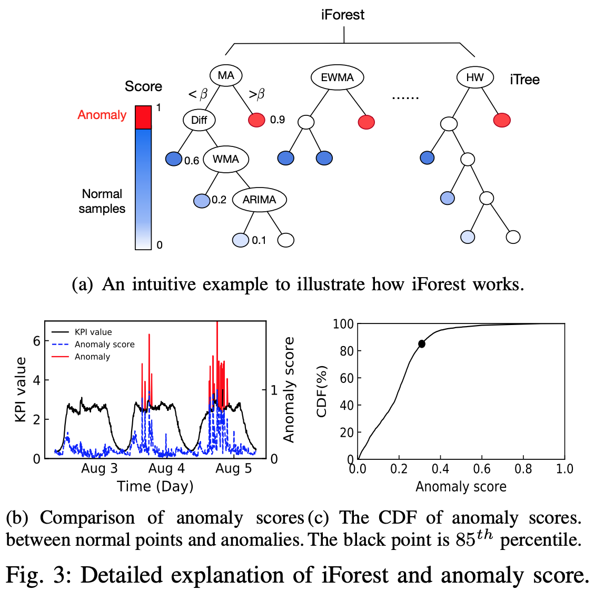
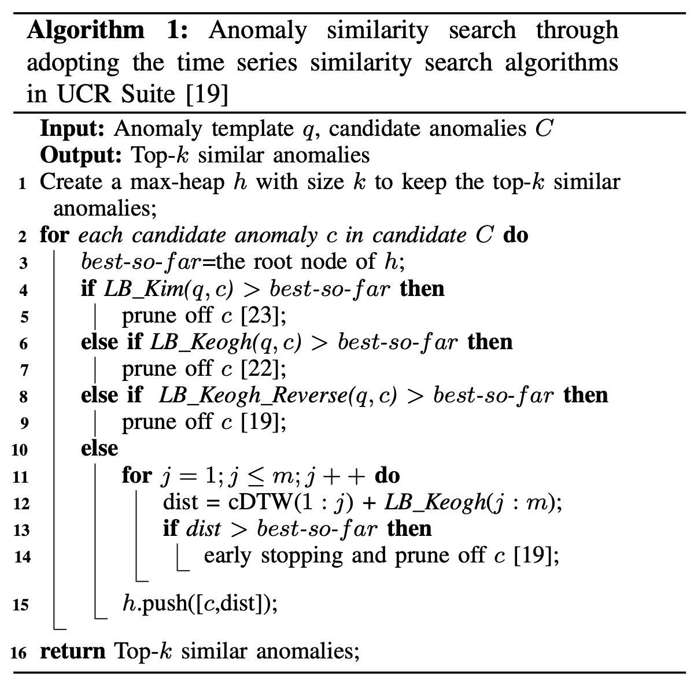
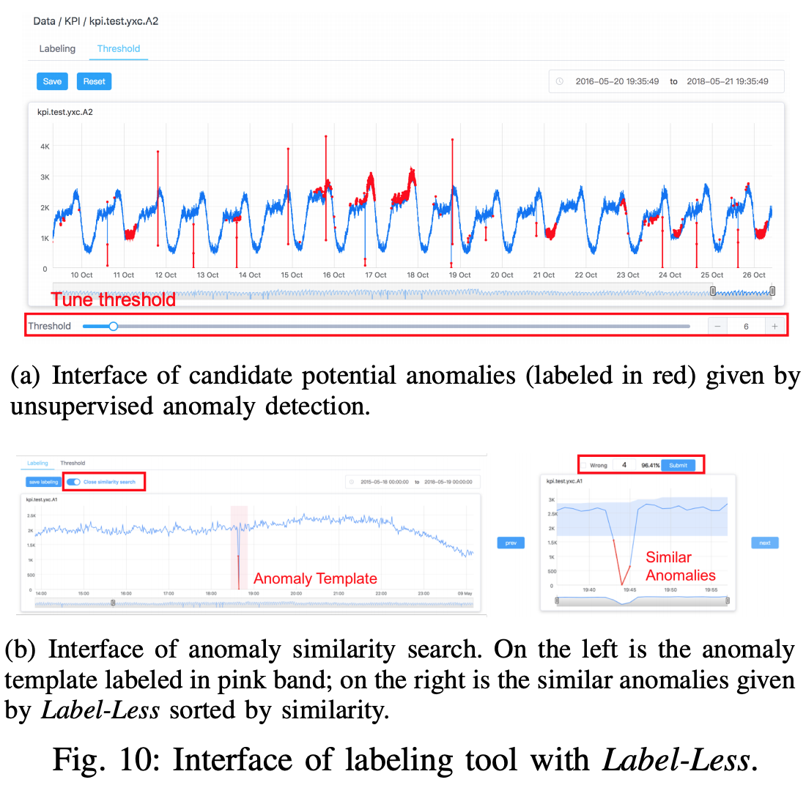
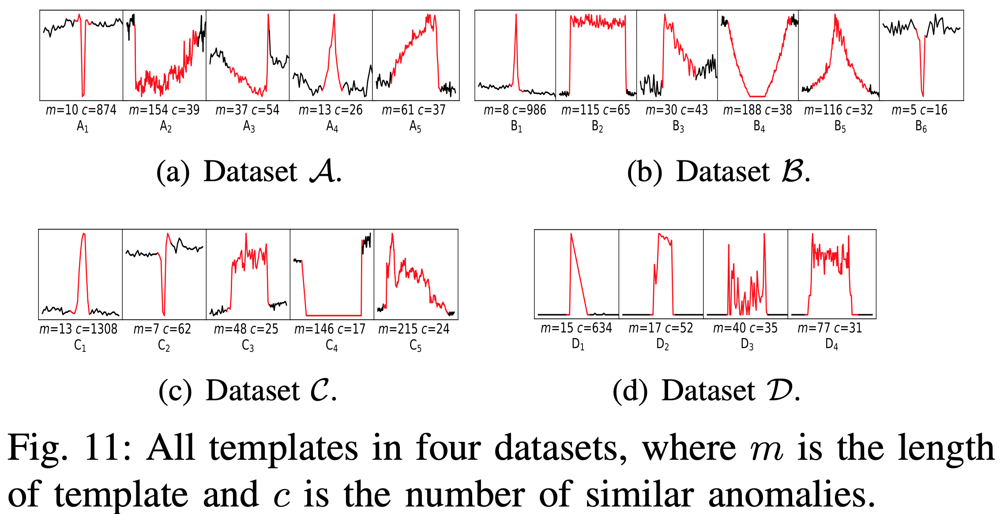

Overview
本篇文章是为了介绍一种基于少量样本标记而获得更多样本的方法，论文的原文是《Label-Less: A Semi-Automatic Labeling Tool for KPI Anomalies》，是清华大学与多家公司（必示科技，中国建设银行等）的合作论文。
在时间序列异常检测中，因为标注的成本比较大，于是需要寻找一种较少而高效地标注时间序列异常点的方法。在该论文中，Alibaba，Tencent，Baidu，eBay，Sogou提供了上千条时间序列（每条时间序列大约是2-6个月的时间跨度），作者们进行了 30 条 KPIs 的标注工作。但是其标注成本依旧是很大的，于是作者们想到了一种异常相似搜索（anomaly similarity search）的算法，目标是对已经标注好的时间序列异常模式进行模版搜索。目的就是达到 label-less，也就是较少的标注而获得更多的标注数据。
在本篇论文中，在异常检测的过程中，作者们使用了时间序列的预测模型（time series prediction models）来获得时间序列的特征，使用了孤立森林（Isolation Forest）来对时间序列的特征来做无监督的异常检测。并且其效果优于 one class svm 算法和 local outlier factor 算法。在搜索的部分，作者使用了加速版的 DTW 算法（accelerated dynamic time warping approach）来做相似度的搜索和模式的匹配。其中也尝试了各种技巧和方法，包括 constrained DTW，LB Keogh 方法，early stopping 算法等工具。
Framework
整个 Label-Less 的架构图如下表示：

其中的 Operators 指的是业务运维人员，面对着无标记的多条时间序列曲线。系统首先会进行无监督的异常检测算法啊，包括时间序列的预处理（归一化等）操作，然后使用差分（Difference），移动平均算法（moving average），带权重的移动平均算法（weighted moving average），指数移动平均（ewma），holt winters，ARIMA 等算法来做特征的提取。此时，对于不同的时间序列预测工具，我们可以得到不同的预测值，然后把预测值减去实际值并且取绝对值，就得到时间序列的误差序列。i.e. 就作为数据点 的特征。
在这种情况下，由于用了六个时间序列预测算法，因此原始的时间序列 就可以变成特征矩阵 。对于特征矩阵 可以使用 isolation forest 来做无监督的异常检测并且做阈值的设定；如下图所示：

而另外的一部分的异常相似搜索（anomaly similarity search）是在第一部分的基础上在做的，Unsupervised Anomaly Detection 会输出疑似异常或者候选异常，并且基于已知的异常模板（Anomaly Template）进行相似度的匹配，此时可以使用 accelerated DTW 算法，选择出最相似的 Top-K 异常，然后运维人员进行标注，得到更多的样本。
由于，对于两条长度分别是 m 和 n 的时间序列，DTW 相似度算法的时间复杂度是 O(mn)，因此在搜索的时候需要必要的加速工作。在这种地方，作者们使用了 LB-Kim，LB-Keogh，LB-Keogh-Reverse 算法来做搜索的加速工作。而这些的时间复杂度是 O(m+n)。整体的思路是，如果两条时间序列 q 和 c 的 LB-Kim，LB-Keogh，LB-Keogh-Reverse 的下界大于某个阈值，则不计算它们之间的 DTW 距离。否则就开始计算 DTW。并且在计算 DTW 的时候，如果大于下界，则会提前终止（early stopping），不会继续计算下去。如果都没有大于阈值，则把这个候选曲线和 dist 距离放入列表，最后根据列表中的 dist 来做距离的逆序排列。
整体流程如下：

其运行速度也比直接使用 DTW 快不少.

下图则表示模板，m 表示模板的长度，c 表示相似的异常候选集个数；

Conclusion
整体来看，本文提供了一种通过少量人工标注，无监督算法和相似度算法来获得更多样本的方法。在候选的时间序列条数足够多的时候，是可以进行时间序列的相似度匹配的。这给未来在运维领域提供海量的时间序列标注数据给予了一定的技术支持。